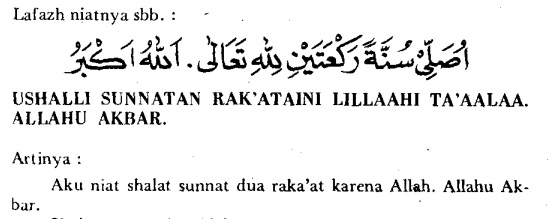

Sedangkan shalat sunah mutlak: semua shalat sunah yang dilakukan tanpa terikat waktu, sebab tertentu, maupun jumlah rakaat tertentu. Sehingga boleh dilakukan kapanpun, di manapun, dengan jumlah rakaat berapapun, selama tidak dilakukan di waktu atau tempat yang terlarang untuk shalat (al-Mausu’ah al-Fiqhiyah al-Kuwaitiyah, 27:154).
Hukum Shalat Sunah Mutlak
Shalat sunah mutlak, dianjurkan untuk banyak dilakukan setiap waktu, siang maupun malam, selain waktu larangan untuk shalat. Waktu terlarang tersebut adalah:
- Setelah subuh sampai matahari terbit.
- Ketika matahari tepat berada di atas kepala, hingga condong sedikit kebarat.
- Ketika matahari sudah menguning setelah asar, hingga matahari terbenam.
Allah berfirman,
تَتَجَافَى جُنُوبُهُمْ عَنِ الْمَضَاجِعِ يَدْعُونَ رَبَّهُمْ خَوْفًا وَطَمَعًا وَمِمَّا رَزَقْنَاهُمْ يُنْفِقُونَ
“Punggung-punggung mereka jauh dari tempat tidur, karena beribadah kepada Allah, dengan penuh rasa takut dan rasa harap. Mereka juga menginfakkan sebagian dari rezeki yang Aku berikan kepada mereka.” (QS. As-Sajdah: 16)
Keutamaan Shalat Sunah Mutlak
Dari Rabi’ah bin Ka’b al-Aslami radhiyallahu ‘anhu, beliau menceritakan,
Aku pernah tidur bersama Nabi shallallahu ‘alaihi wa sallam. Aku layani beliau dengan menyiapkan air wudhu beliau dan kebutuhan beliau. Setelah usai, beliau bersabda:
“Mintalah sesuatu.” Aku menjawab: ‘Aku ingin bisa bersama anda di surga.’ Beliau bersabda: “Yang selain itu?” ‘Hanya itu.’ Kataku.
Kemudian beliau bersabda,
فَأعِنِّي عَلَى نَفْسِكَ بِكَثْرَةِ السُّجُودِ
“Jika demikian, bantulah aku untuk mewujudkan harapanmu dengan memperbanyak sujud.” (HR. Muslim).
Rasulullah shallallahu ‘alaihi wa sallam merupakan figur yang pandai berterima kasih kepada orang lain. Sehingga ketika ada orang yang melayani beliau, beliau tidak ingin itu menjadi utang budi bagi beliau. Sebagai wujud rasa terima kasih, beliau menawarkan kepada Rabi’ah yang telah membantunya, agar meminta sesuatu sebagai upahnya. Namun sang sahabat menginginkan agar upahnya berupa surga, bersama Nabi shallallahu ‘alaihi wa sallam. Untuk mewujudkan itu, Rasulullah shallallahu ‘alaihi wa sallam meminta agar Rabi’ah memperbanyak sujud, dalam arti memperbanyak shalat sunah. Karena seseorang bisa melakukan sujud sebanyak-banyaknya dengan rajin shalat sunah mutlak.
Dalam hadis yang lain, dari Ma’dan bin Abi Thalhah al-Ya’mari mengatakan,
Saya pernah bertemu Tsauban, budak yang dibebaskan Rasulullah shallallahu ‘alaihi wa sallam. Aku pun bertanya kepadanya, ‘Tolong ceritakan kepadaku, amalan apa yang bisa menjadi sebab Allah memasukkanku ke dalam surga?’ Dalam riwayat yang lain: ‘Sampaikan kepadaku amalan yang paling dicintai Allah?’ Tsauban pun terdiam. Kemduian aku mengulangi pertanyaanku tiga kali. Setelah itu beliau menjawab, ‘Aku pernah menanyakan hal itu kepada Rasulullah shallallahu ‘alaihi wa sallam. Dan beliau menjawab:
عَلَيْكَ بِكَثْرَةِ السُّجُودِ، فَإِنَّكَ لا تَسْجُدُ، سَجْدَةً إِلا رَفَعَكَ اللهُ بِهَا دَرَجَةً، وَحَطَّ عَنْكَ بِهَا خَطِيئَةً
“Perbanyaklah bersujud. Karena tidaklah kamu bersujud sekali, kecuali Allah akan mengangkat satu derajat untukmu dan menghapus satu kesalahan darimu.” (HR. Muslim).
Tingkat keutamaan
Pada penjelasan sebelumnya, telah disebutkan bahwa shalat sunah ada 2: shalat sunah mutlak dan shalat sunah muqayad. Semua shalat sunah ini, tingkatannya berbeda-beda. Berikut rinciannya:
Shalat sunah muqayad, lebih utama dibandingkan shalat sunah mutlak. Meskipun shalat sunah muqayad ini dilakukan di siang hari.
Shalat sunah mutlak yang dilakukan di malam hari, lebih utama dibandingkan shalat sunah mutlak yang dilakukan di siang hari.
Sebagai contoh, orang yang mengerjakan shalat sunah mutlak antara maghrib dan isya, lebih utama dibandingkan orang yang mengerjakan shalat sunah mutlak antara zuhur dan asar.
Dari Abu Hurairah radhiyallahu ‘anhu, Nabi shallallahu ‘alaihi wa sallam bersabda,
أفْضَلُ الصَّلاةِ بَعْدَ الصَّلاةِ المَكْتُوبَةِ الصَّلاةُ فِي جَوْفِ اللَّيْلِ
“Shalat yang paling utama setelah shalat wajib adalah shalat sunah yang dikerjakan di malam hari.” (HR. Muslim)
Shalat sunah mutlak yang dikerjakan di sepertiga malam terakhir, lebih utama dibandingkan shalat sunah mutlak di awal malam. Karena sepertiga malam terakhir adalah waktu mustajab untuk berdoa.
Dari Abu Hurairah radhiyallahu ‘anhu, Nabi shallallahu ‘alaihi wa sallam bersabda,
يَنْزِلُ رَبُّنَا تَبَارَكَ وَتَعَالَى كُلَّ لَيْلَةٍ إِلَى السَّمَاءِ الدُّنْيَا، حِينَ يَبْقَى ثُلُثُ اللَّيْلِ الْآخِرُ، فَيَقُولُ: مَنْ يَدْعُونِي فَأَسْتَجِيبَ لَهُ، وَمَنْ يَسْأَلُنِي فَأُعْطِيَهُ، وَمَنْ يَسْتَغْفِرُنِي فَأَغْفِرَ لَهُ
“Tuhan kita Yang Maha Mulia lagi Maha Tinggi, turun setiap malam ke langit dunia, ketika tersisa sepertiga malam yang terakhir. Kemudian Dia berfirman: ‘Siapa yang berdoa kepada-Ku akan Aku kabulkan, siapa yang meminta kepada-Ku akan Aku beri, dan siapa yang memohon ampun kepada-Ku akan aku ampuni.” (HR. Muslim)
Demikian yang dikabarkan Rasulullah shallallahu ‘alaihi wa sallam yang wajib kita imani sebagaimana yang beliau sampaikan. Allah turun ke langit dunia, dengan cara yang sesuai kebesaran dan keagungannya, dan tidak boleh kita khayalkan.
Shalat sunah yang dilakukan di rumah, lebih utama dibandingkan shalat sunah yang dikerjakan di masjid.
إِنَّ أَفْضَلَ الصَّلاَةِ صَلاَةُ المَرْءِ فِي بَيْتِهِ إِلَّا المَكْتُوبَةَ
“Sesungguhnya shalat yang paling utama adalah shalat yang dilakukan seseorang di rumahnya, kecuali shalat wajib.” (HR. Bukhari dan Muslim)
Tata Cara Shalat Sunah Mutlak
Shalat sunah mutlak tata caranya sama dengan shalat biasa. Tidak ada bacaan khusus, maupun doa khusus. Sama persis seperti shalat pada umumnya.
Untuk bilangan rakaatnya, bisa dikerjakan dua rakaat salam – dua rakaat salam. Bisa diulang-ulang dengan jumlah yang tidak terbatas.
Dari Ibnu Umar radhiyallahu ‘anhuma, bahwa ada seseorang yang mendatangi Nabi shallallahu ‘alaihi wa sallam dan bertanya, ‘Bagaimana cara shalat di malam hari?’ Beliau menjawab:
مَثْنَى مَثْنَى، فَإذَا خَشِيتَ الصُّبْحَ فَأوْتِرْ بِوَاحِدَةٍ، تُوتِرُ لَكَ مَا قَدْ صَلَّيْتَ
“Dua rakaat-dua rakaat, dan jika kamu khawatir nabrak subuh, kerjakanlah witir satu rakaat, sebagai pengganjil untuk semua shalat yang telah anda kerjakan.” (HR. Bukhari dan Muslim)
Untuk shalat sunah mutlak yang dikerjakan siang hari, bisa juga dikerjakan empat rakaat dengan salam sekali, tanpa duduk tasyahud awal.
